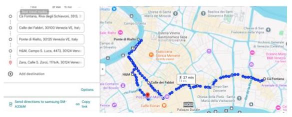

Murano:
El vaporetto #42 que sale de San Zaccaria nos deja en unos 30 minutos directo en Murano. Una vez allí, la pequeña isla, famosa mundialmente por su cristal, ofrece muchísimas tiendas y fábricas donde se puede ver la elaboración manual de objetos de cristal.
Las tiendas y fábricas sorprenden sin duda, aunque no es lo único: podemos alejarnos un poco de las multitudes y pasear por canales y calles muy pintorescas.
A 30 minutos más de vaporetto se encuentra la pequeña isla de Burano, famosa por la elaboración artesanal de tejidos y encajes de hilo. La isla cuenta con tiendas de exposición y venta de estos tejidos, así como espacios donde explican su técnica.
Burano además ofrece un paseo por calles con casas de fachadas coloridas y la famosa Iglesia San Martino con su campanario inclinado. Lo mejor de esta isla es coincidir con el atardecer, cuando el sol tiñe con magia los colores de Burano.
Compras:
Calle La Mercerie / Calle Dei Fabbri, yendo de Piazza San Marco a Ponte Rialto.
